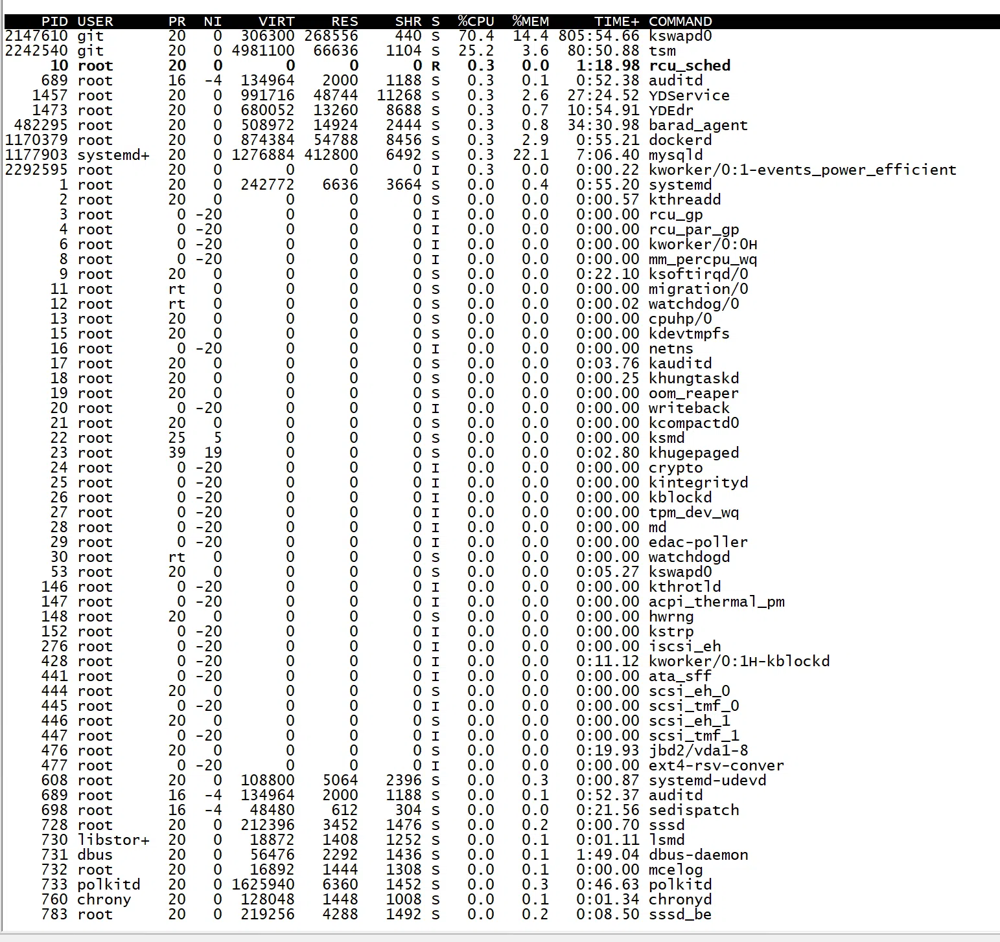

本文最后更新于：2021年6月15日 上午
异常情况
使用ssh登录发现连接很缓慢，排除网络问题。登陆后使用top查看进程，发现git用户的两个进程占用了95%的CPU。

网上查了下，kswapd0被植入挖矿病毒，立马kill这个进程，CPU的负荷马上降了下来。
查看进程端口
1
| netstat -anltp|grep kswapd0
|
查看程序路径
定时器查看
查看到定时任务，这个就是病毒的执行路径。
1
2
3
4
5
| [root@VM-0-15-centos ~]# crontab -l -u git
1 1 */2 * * /var/tmp/.X18263/.rsync/a/upd>/dev/null 2>&1
5 8 * * 0 /var/tmp/.X18263/.rsync/b/sync>/dev/null 2>&1
@reboot /var/tmp/.X18263/.rsync/b/sync>/dev/null 2>&1
0 0 */3 * * /var/tmp/.X18263/.rsync/c/aptitude>/dev/null 2>&1
|
临时目录查看
1
2
3
4
5
6
| [root@VM-0-15-centos tmp]# cd /temp
[root@VM-0-15-centos tmp]# ll -sa | grep git
0 -rw-rw-r-- 1 git git 0 May 24 21:41 .out
4 -rw-rw-r-- 1 git git 9 May 24 07:28 up.txt
4 drwxrwxr-x 2 git git 4096 May 24 21:25 .X25-unix
4 drwxrwxr-x 2 git git 4096 May 24 21:50 .X3-u111
|
处理办法
直接杀掉进程
删除所有的crontab计划任务
- 删除用户和文件（前提是正规业务没有用到此用户）
- 删除/tmp目录下test用户的文件
Xmrig挖矿木马之暴力分析
可以参考大神的分析https://www.jianshu.com/p/3dd5ad1cd51b。
密码一定要复杂！！！